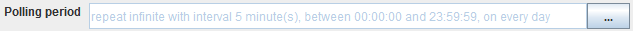

How to configure a timer

Topic content
Typically the channel searches its source for available data periodically:

To change the intervals at which the channel searches its data, the user clicks on the button labeled with three dots and then can edit the timer properties.
There are two types of timers, periodical timers and absolute timers. Both are configured using the same dialog. In most cases a periodically timer is used which regularly creates a signal.
timer configuration
•Description for the timer, e.g. polling timer
•Valid from/to Here the user can state a time span where the timer is valid. Outside of this time span, the timer is invalid and doesn't create events.
•Mode This Option is only sensible if the timer dialog is used to configure a timer event. In the context of channels it is disabled.
•Trigger type The user may restrict the timer to work only at certain days:
oDaily Here the user may restrict the timer to fire events on certain days of the week
oMonthly Here the user may restrict the timer to fire events at a particular day of the month
•Absolute If an absolute timer is configured, the user must enter a fixed time at which the timer raises an event. E.g. one could declare the timer to run every day at 6:00 in the morning.
•Periodically If an Periodical timer is used the user has to configure the following properties:
oStart/End time A time span of the day where the timer shall be active
oRepeat count Here the user may restrict the timer to fire only a certain amount of events after start. E.g. one could declare the timer to start at 6:00 AM an fire exactly 2 times. The standard value is infinite, that means there is no restriction.
oRepeat interval the time interval after which an event is fired periodically.